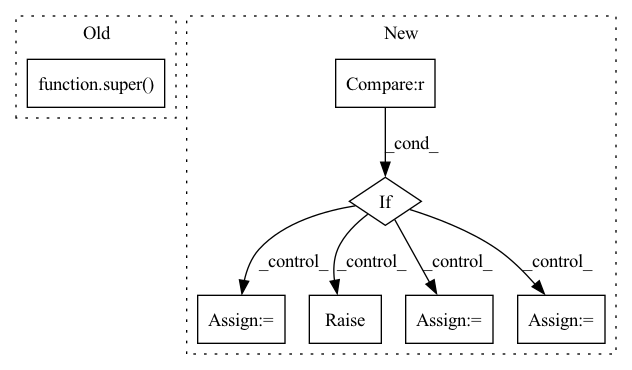

Pattern ID :1236
Before Change
cached=False,
weight=True,
bias=True):
super( SGConv, self) .__init__()
self._cached = cached
self._cached_h = None
self._k = k
After Change
bias=True):
super().__init__()
if norm not in ("none", "both", "right", "left") :
raise DGLError("Invalid norm value. Must be either "none", "both", "right" or "left"."
" But got "{}".".format(norm))
self._in_feats = in_feats
self._out_feats = out_feats
self._cached = cached
self._cached_h = None
self._k = k
self._norm = norm
self._add_self_loop = add_self_loop
self.linear = Linear(in_feats, out_feats, weight=weight, bias=bias)
def reset_parameters(self):
Reinitialize learnable parameters.
In pattern: SUPERPATTERN
Frequency: 4
Non-data size: 7
Instances Fragment ID: 3429172
Project Name: edisonleeeee/graphwar
Commit Name: c43665fd30401c63acbd50175da1880509a52d21
Time: 2021-12-06
Author: cnljt@outlook.com
File Name: graphwar/nn/sgconv.py
M Class Name: SGConv
N Class Name: SGConv
M Method Name: __init__(9)
N Method Name: __init__(7)
M Parent Class: nn.Module
N Parent Class: nn.Module
M File Name: graphwar/nn/sgconv.py
N File Name: graphwar/nn/sgconv.py
M Start Line: 70
M End Line: 85
N Start Line: 90
N End Line: 108
Before Change
steps (int): The total number of convs in this module, 1 conv 1x1 and (steps - 1) conv3x3.
def __init__(self, in_channels: int, out_channels: int, steps: int, stride: int = 1):
super( STDCBlock, self) .__init__()
assert steps in [2, 3, 4], f"only 2, 3, 4 steps number are supported, found: {steps}"
self.stride = strideAfter Change
// build first step conv 1x1.
self.conv_list.append(ConvBNReLU(in_channels, out_channels // 2, kernel_size=1, bias=False))
// build skip connection after first convolution.
if stride == 1 :
self.skip_step1 = nn.Identity()
elif stdc_downsample_mode == "avg_pool":
self.skip_step1 = nn.AvgPool2d(kernel_size=3, stride=2, padding=1)
elif stdc_downsample_mode == "dw_conv":
self.skip_step1 = ConvBNReLU(
out_channels // 2, out_channels // 2, kernel_size=3, stride=2, padding=1, bias=False, groups=out_channels // 2, use_activation=False
)
else:
raise ValueError(f"stdc_downsample mode is not supported: found {stdc_downsample_mode}," f" must be in [avg_pool, dw_conv]")
in_channels = out_channels // 2
mid_channels = in_channels Fragment ID: 3429127
Project Name: deci-ai/super-gradients
Commit Name: 98083d4303f887cb29f39029871612fe5e2e4753
Time: 2022-11-02
Author: 88616312+lkdci@users.noreply.github.com
File Name: src/super_gradients/training/models/segmentation_models/stdc.py
M Class Name: STDCBlock
N Class Name: STDCBlock
M Method Name: __init__(6)
N Method Name: __init__(5)
M Parent Class: nn.Module
N Parent Class: nn.Module
M File Name: src/super_gradients/training/models/segmentation_models/stdc.py
N File Name: src/super_gradients/training/models/segmentation_models/stdc.py
M Start Line: 34
M End Line: 43
N Start Line: 29
N End Line: 53
Before Change
expansion = 1
def __init__(self, in_planes, planes, stride=1):
super( BasicBlock, self) .__init__()
self.conv1 = nn.Conv2d(in_planes, planes, kernel_size=3, stride=stride, padding=1, bias=False)
self.bn1 = nn.BatchNorm2d(planes)
self.conv2 = nn.Conv2d(planes, planes, kernel_size=3, stride=1, padding=1, bias=False)After Change
super().__init__()
if norm_layer is None:
norm_layer = nn.BatchNorm2d
if groups != 1 or base_width != 64 :
raise ValueError("BasicBlock only supports groups=1 and base_width=64")
if dilation > 1:
raise NotImplementedError("Dilation > 1 not supported in BasicBlock")
// Both self.conv1 and self.downsample layers downsample the input when stride != 1
self.conv1 = conv3x3(inplanes, planes, stride)
self.bn1 = norm_layer(planes)
self.relu = nn.ReLU(inplace=True)
self.conv2 = conv3x3(planes, planes)
self.bn2 = norm_layer(planes)
self.downsample = downsample
self.stride = stride
def forward(self, x: Tensor) -> Tensor:
identity = x Fragment ID: 3429180
Project Name: decile-team/cords
Commit Name: 931f2dbbb853ea9beb25e72b69e473c0365e60ca
Time: 2023-02-04
Author: 61333497+krishnatejakk@users.noreply.github.com
File Name: cords/utils/models/resnet.py
M Class Name: BasicBlock
N Class Name: BasicBlock
M Method Name: __init__(9)
N Method Name: __init__(4)
M Parent Class: nn.Module
N Parent Class: nn.Module
M File Name: cords/utils/models/resnet.py
N File Name: cords/utils/models/resnet.py
M Start Line: 17
M End Line: 31
N Start Line: 66
N End Line: 90